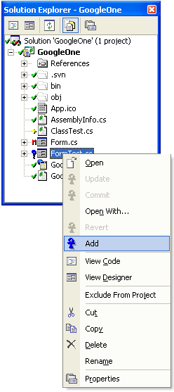
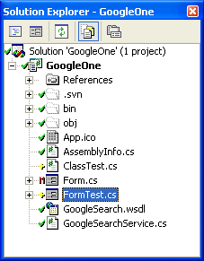
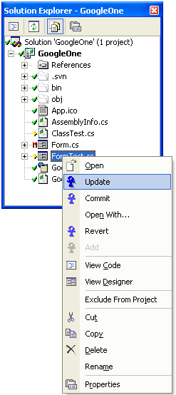
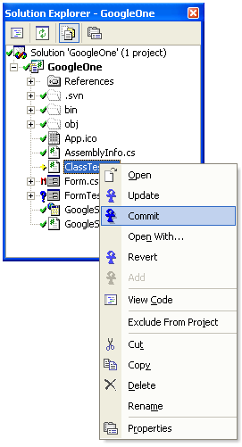
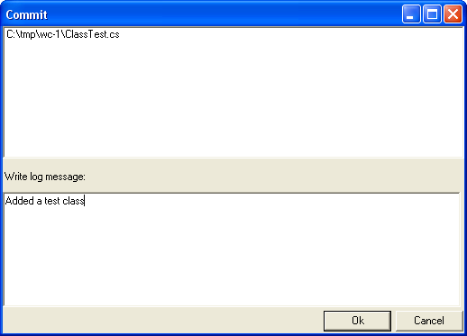
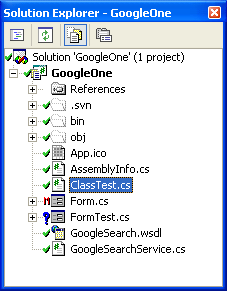
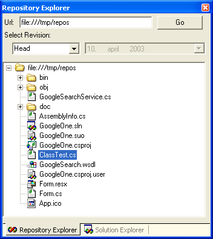

Ankh Start Guide
Walkthrough example
For those who have knowledge of Subversion
Walkthrough example
Bellow are some simple examples of how one might use the Ankh client. In general,
things are designed to be similar to the version control system Subversion, but
many things are different as we introduce a GUI.
Open a project that is under revision control in Visual Studio .NET.
- File -> Open -> Project
- Select a project under revision control (working copy)
- Click at the Open-button. Solution Explorer file tree view of working copy is visible to the
right of the screen. Status icons are displayed in front of each item indicating
that the item is under revision control.
Add an unversioned file to working copy (Watch the status icon change)
- Select an unversioned file in the project (marked with a blue ? icon).
- Right click on the file and a menu will pop up.
- Select "Add" from the menu.

Note that the status has changed on the file from a blue ?
icon to a yellow + icon in front of the filename in Solution Explorer.

Update your working copy
- Select an item.
- Right click on the item and a menu will pop up.
- Select "Update" from the menu.

Commit item in working copy
- Select an item under revision control that either has been modified or added.
(Has status icons + or M in front of the filename in Solution Explorer)
- Right click on the item and a menu will pop up.
- Select "Commit" from the menu.

- Write a log message in the dialogbox that pops up. Click the Ok-button.

- Take notice of the status that has changed on the file from a yellow + icon
to a green v icon in front of the filename in Solution Explorer.

See the committed item in the repository tool window
- If Repository Explorer is not visible already select Tools -> Repos Explorer. The
committed item could now be seen in the Repository Explorer if head revision is selected.

For those who have knowledge of Subversion
In Ankh the Subversion commands update, add, commit, status and list are implemented in
Visual Studio .NET.
"Svn add" is visible in VS .NET as a menu-options if an unversioned item is selected in the
Solution Explorer and right clicked.
"Svn update" and "svn commit" is visible in VS .NET as menu-options if an item under
revision control is selected in the Solution Explorer and right clicked.
The "svn status" and "svn list" command of the working copy is displayed as a file tree
view in Solution Explorer in VS.NET with status-icons shown on each item included in the project.
The "svn list" command of the repository is displayed as a file tree view in an optional
Repository Explorer in VS .NET.